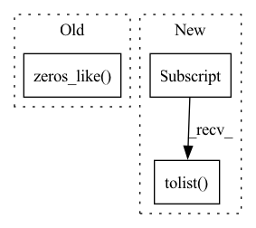

Pattern ID :26115
Before Change
truths = truths.cpu().detach()
preds_inds = torch.argmax(preds, dim=-1)
preds = torch.zeros_like( preds)
for i in range(total):
preds[i, preds_inds[i]] = 1
After Change
temp1.append(preds[i].tolist())
// print(preds[i])
else:
temp2.append(preds[i].tolist() )
// print(preds[i])
// print(temp2)
print(np.mean(temp1,0))In pattern: SUPERPATTERN
Frequency: 3
Non-data size: 3
Instances Fragment ID: 78699857
Project Name: wenliangdai/modality-transferable-mer
Commit Name: e87e05acc2a55e7f84b52c7418bce20a139a6604
Time: 2020-06-20
Author: wenliang.dai.1995@gmail.com
File Name: src/evaluate.py
M Class Name: AnonimousClass
N Class Name: AnonimousClass
M Method Name: eval_iemocap(2)
N Method Name: eval_iemocap(2)
M Parent Class:
N Parent Class:
M File Name: src/evaluate.py
N File Name: src/evaluate.py
M Start Line: 155
M End Line: 165
N Start Line: 159
N End Line: 214
Before Change
comodel.forward_step(sample[:, :, i])
// zero-pad end manually
zeros = torch.zeros_like( sample[:, :, 0])
for _ in range(comodel.delay - frames_per_clip):
comodel.forward_step(zeros)
// final resultAfter Change
// final result
output = comodel.forward_step(pad)
output_top10 = torch.topk(output, k=10)[1][0].tolist()
// assert torch.allclose(target, output, atol=0.8) // inexact
assert target_top10[0] == output_top10[0]
assert len(set(target_top10[:3]) - set(output_top10[:3])) <= 1 Fragment ID: 78699853
Project Name: lukashedegaard/co3d
Commit Name: a0c30f4d90d95e358de155ec07f8272e2550b861
Time: 2021-09-08
Author: lh@eng.au.dk
File Name: tests/cox3d/test_x3d.py
M Class Name: AnonimousClass
N Class Name: AnonimousClass
M Method Name: test_CoX3D_se_mod(0)
N Method Name: test_CoX3D_se_mod(0)
M Parent Class:
N Parent Class:
M File Name: tests/cox3d/test_x3d.py
N File Name: tests/cox3d/test_x3d.py
M Start Line: 694
M End Line: 791
N Start Line: 694
N End Line: 779
Before Change
comodel.forward_step(sample[:, :, i])
// zero-pad end manually
zeros = torch.zeros_like( sample[:, :, 0])
for _ in range(comodel.delay - frames_per_clip):
comodel.forward_step(zeros)
// final resultAfter Change
// final result
output = comodel.forward_step(pad)
output_top10 = torch.topk(output, k=10)[1][0].tolist()
// assert torch.allclose(target, output, atol=0.8) // inexact
assert target_top10[0] == output_top10[0]
assert len(set(target_top10[:3]) - set(output_top10[:3])) <= 1 Fragment ID: 78699855
Project Name: lukashedegaard/co3d
Commit Name: 30aa0777c650cf0ac718a31469558988dbe3bf59
Time: 2021-09-10
Author: lh@eng.au.dk
File Name: tests/cox3d/test_x3d.py
M Class Name: AnonimousClass
N Class Name: AnonimousClass
M Method Name: test_CoX3D_se_mod(0)
N Method Name: test_CoX3D_se_mod(0)
M Parent Class:
N Parent Class:
M File Name: tests/cox3d/test_x3d.py
N File Name: tests/cox3d/test_x3d.py
M Start Line: 694
M End Line: 791
N Start Line: 694
N End Line: 779